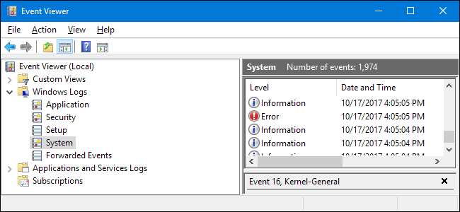

Operating Systems
Windows
Event Viewer :
A built-in Windows tool used to view system logs.
Helps troubleshoot errors, warnings, crashes, and security events.
 alt="Windows Event Viewer Logs" class="diagram-img">Logs are divided into:
- Application – Software-related issues.
- System – OS and hardware events.
- Security – Login attempts, audits, policy changes.
Each event includes:
- Event ID
- Source
- Severity (Information, Warning, Error, Critical)
Use cases :
- Diagnosing system crashes (BSOD)
- Investigating failed logins
- Tracking software or driver failures
Registry :
A central hierarchical database storing Windows configuration settings.
 alt="Windows Registry Editor"
class="diagram-img">
alt="Windows Registry Editor"
class="diagram-img">
Contains settings for:
- Hardware
- Installed software
- User preferences
- System policies
Important Registry hives:
- HKEY_LOCAL_MACHINE (system-wide settings)
- HKEY_CURRENT_USER (current user settings)
- HKEY_CLASSES_ROOT (file associations)
Linux
Logs :
Plain text files that record system and application activity.
Stored mainly in /var/log/
 alt="Linux Log Files in var log directory"
class="diagram-img">
alt="Linux Log Files in var log directory"
class="diagram-img">
Common log files :
- /var/log/syslog – General system activity
- /var/log/auth.log – Authentication and sudo usage
- /var/log/dmesg – Kernel messages
- /var/log/boot.log – Boot process info
Viewing logs :
cat, less, tail
Permissions :
Linux uses a permission-based security model for files and directories.
Permission types:
- r – read
- w – write
- x – execute
User categories:
- Owner
- Group
- Others
Example:
-rwxr-xr--
- Owner: read, write, execute
- Group: read, execute
- Others: read only
Commands :
- ls -l
- chmod
- chown